Contents
clear all close all clc %-----ANKIT AGRAWAL %-----10D070027 sounds = ['aa', 'nn', 'ee', 'ss', 'as']; for index = 1:5
sound = sounds(2*index-1:2*index);
Speech signal
Preparing the initial parameters
if sound == 'as' sound_name = 'aa resynthesized'; else sound_name = sound; end [x fs] = wavread(strcat(sound, '.wav')); x = x'; nfft = 1024; window_len = 0.03*fs; n = 0:window_len-1; hw = 0.54-0.46*cos(2*pi*n/(window_len-1)); freq_axis = (fs/nfft).*(0:(nfft/2 - 1)); time_axis = 1000*[0:(1/fs):(window_len - 1)/fs];
Pre-Emphasized Windowed Signal
b = 0.95;
x_pe = zeros(1, length(x));
x_pe(1) = x(1);
for n = 2:length(x)
x_pe(n) = x(n) - b*x(n-1);
end
Windowed_signal_preemp = x_pe(100:100+window_len-1).*hw;
spectrum_preemp = fft(Windowed_signal_preemp,nfft);
figure()
subplot(211)
plot(time_axis, Windowed_signal_preemp)
grid on
title(strcat(sound_name, ' Preemphasized Windowed Signal'));
xlabel('Time (ms)');
grid on;
subplot(212)
plot(freq_axis, log(abs(spectrum_preemp(1:(nfft/2)))))
grid on
title(strcat(sound_name, ' Log Magnitude Spectrum of Preemphasized Windowed Signal'));
xlabel('Frequency (Hz)');
grid on;
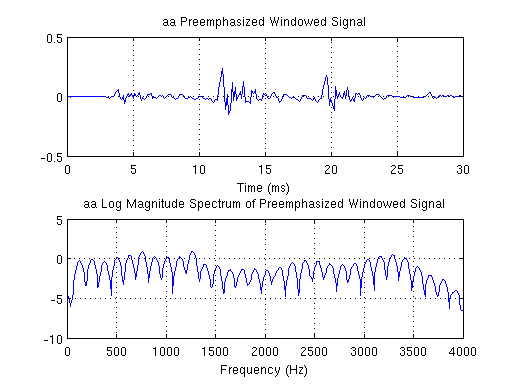 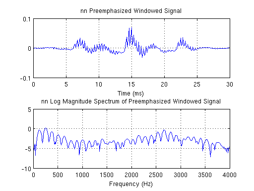 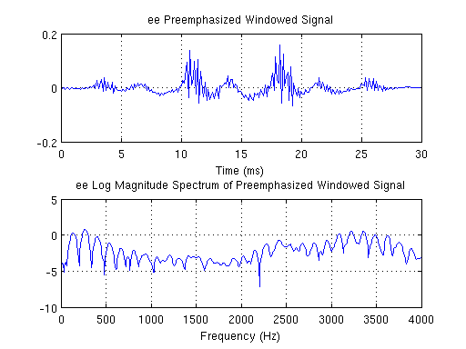 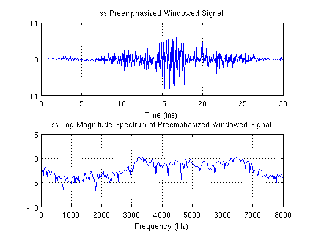 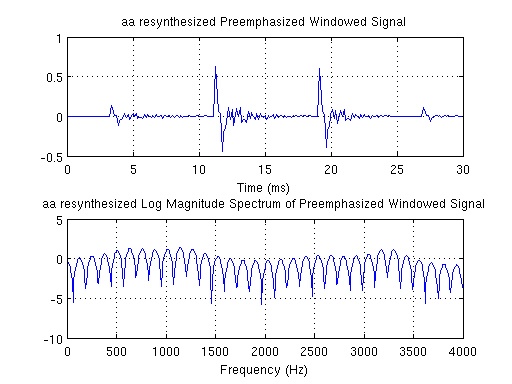 Cepstral Analysis
cepstrum_preemp = ifft(log(abs(fft(Windowed_signal_preemp,nfft))));
ncep_array = [13, 26, 40];
for i=1:3
ncep = ncep_array(i);
lifter = zeros(1,nfft);
lifter(1:ncep) = 1;
lifter((end-ncep):end) = 1;
liftered_spectrum = cepstrum_preemp.*lifter;
figure()
subplot(211)
grid on
plot(cepstrum_preemp(1:(nfft/2)));
title(strcat(sound_name, ' Cepstrum and lifter for first ', int2str(ncep), ' coefficients'));
hold on
plot(lifter(1:(nfft/2)), 'r');
legend ('Cepstrum','Lifter')
grid on
subplot(212)
plot(liftered_spectrum(1:(nfft/2)))
grid on
title(strcat(sound_name, ' Liftered Cepstrum with ', int2str(ncep), ' coefficients'));
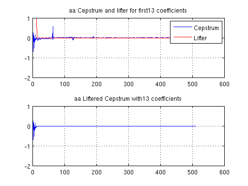 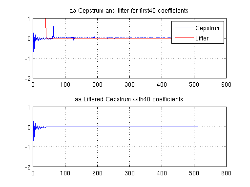 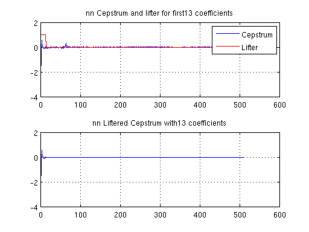 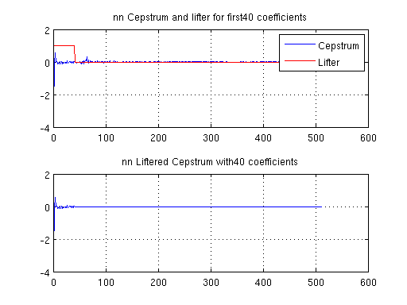 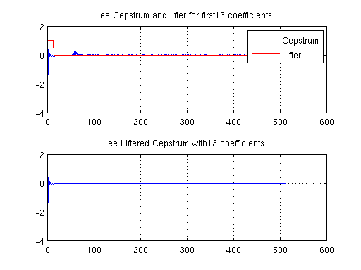 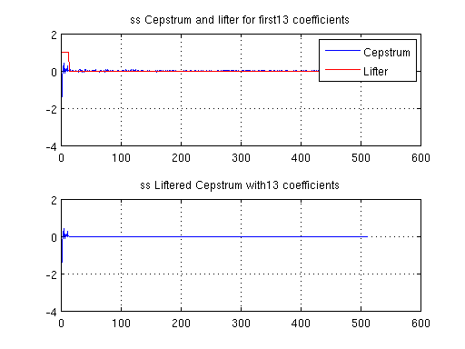 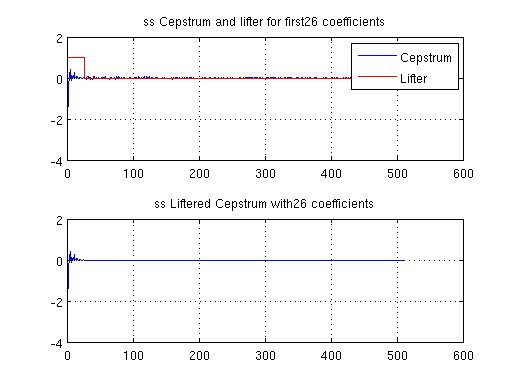 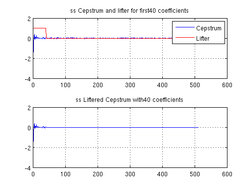 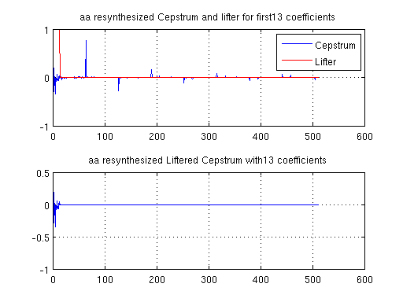 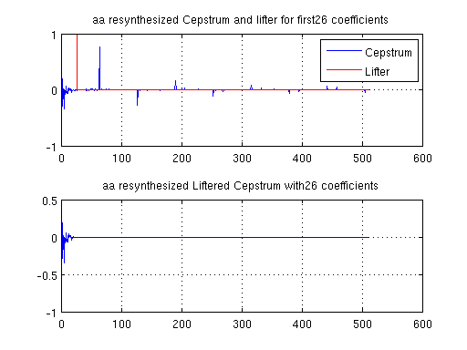 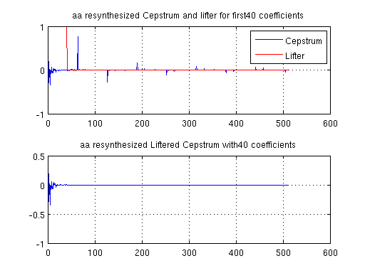 Estimating Spectral Envelope using Cepstral Coefficients
liftered_spectrum_fft = (fft(liftered_spectrum, nfft));
figure
plot(freq_axis, log(abs(exp(liftered_spectrum_fft(1:(nfft/2))))), 'r')
grid on
title(strcat(sound_name, ' Spectral envelope with ', int2str(ncep), ' cepstral coefficients'));
hold on
plot(freq_axis, log(abs(spectrum_preemp(1:(nfft/2)))))
legend ('Estimated spectral envelope','Signal Spectrum')
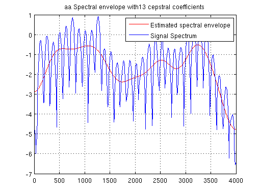 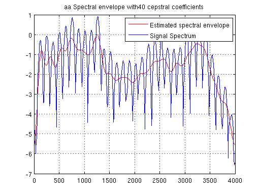 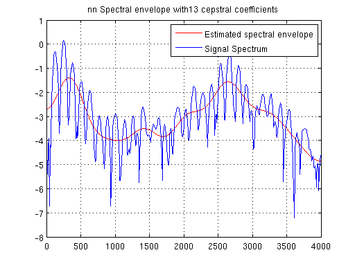 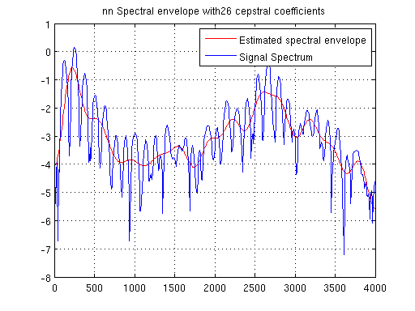  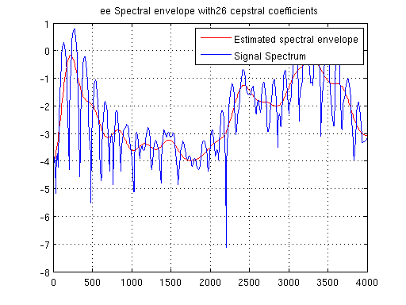 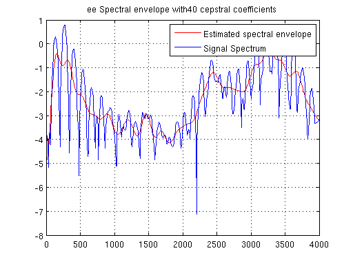 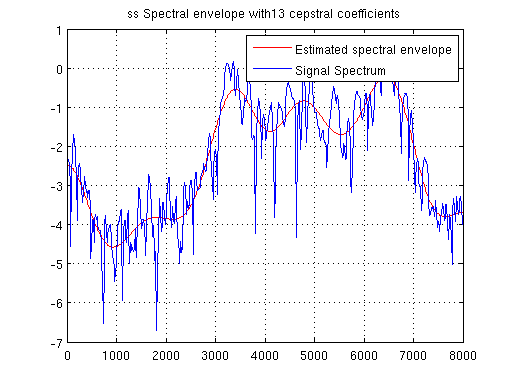 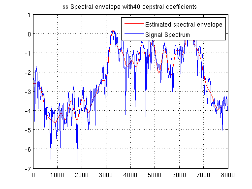 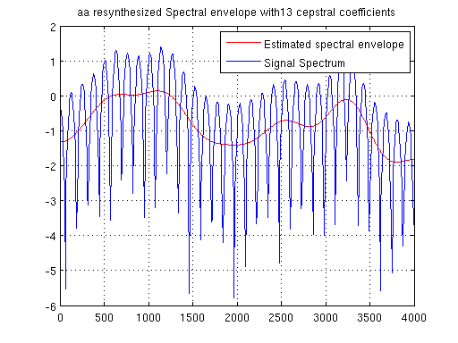 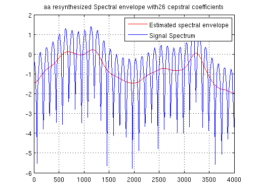 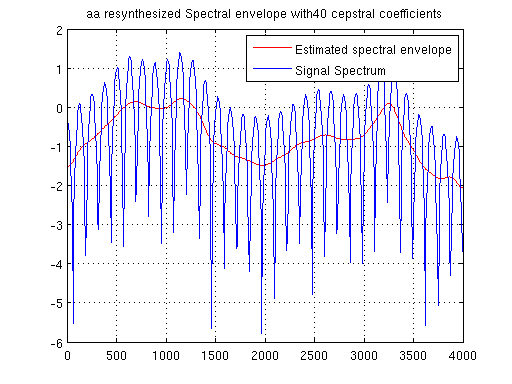
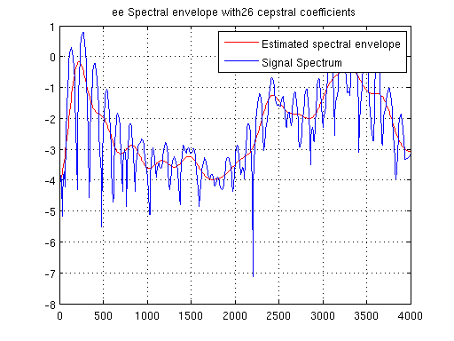 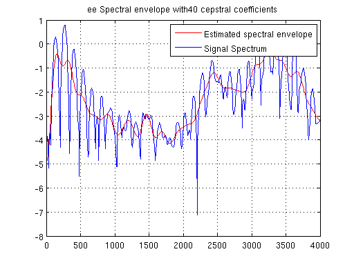 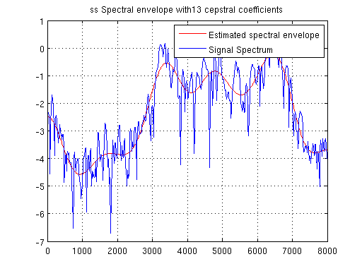 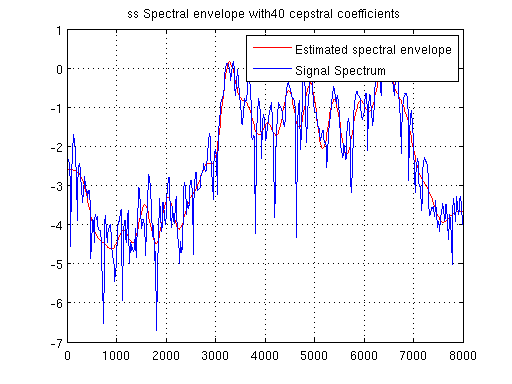 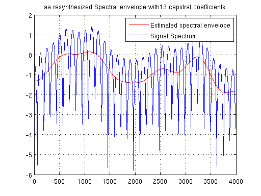 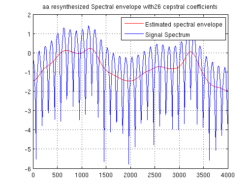 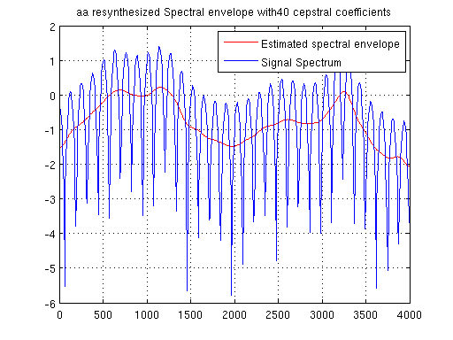 Pitch Estimation
pitch_lifter = ones(1, nfft) - lifter;
pitch_liftered_spectrum = cepstrum_preemp.*pitch_lifter;
[max_value, max_index] = max(pitch_liftered_spectrum(1:(nfft/2)));
pitch_freq = fs / max_index;
if i == 1
disp(strcat(sound, ' Pitch Frequency estimated : ', num2str(pitch_freq)));
end
aa Pitch Frequency estimated :125
nn Pitch Frequency estimated :125
ee Pitch Frequency estimated :131.1475
ss Pitch Frequency estimated :1066.6667
as Pitch Frequency estimated :125
end
Comparison of estimations using 10th order LPC and 13 Cepstral coefficients
% 10th Order LPC p = 10; if sound == 'ss' p = 18; end r = zeros(1,p+1); for k = 1:(p+1) acr_sum = 0; for g = 1:(window_len-k+1) acr_sum = Windowed_signal_preemp(g).*Windowed_signal_preemp(g+k-1) + acr_sum; end r(k) = acr_sum; end [A, EE, K] = levinson(r, p); %f_axis = -4000:4000/(nfft/2):4000 - 4000/(nfft/2); %Residual_error_energy(c) = EE; A_z = sqrt(EE)./((fft(A,nfft))); % 13 Cepstral Coefficients lifter = zeros(1,nfft); lifter(1:13) = 1; lifter((end-13):end) = 1; liftered_spectrum = cepstrum_preemp.*lifter; liftered_spectrum_fft = (fft(liftered_spectrum, nfft)); if sound ~= 'ss' figure plot(freq_axis, log(abs(exp(liftered_spectrum_fft(1:(nfft/2))))), 'r') grid on title(strcat(sound_name, ' 10th order LPC vs 13 cepstral coefficients')); hold on plot(freq_axis, log(abs(spectrum_preemp(1:(nfft/2))))) hold on plot(freq_axis,log(abs(A_z(1:(nfft/2)))),'g'); legend ('13 Cepstral coeffs','Signal Spectrum','10th order LPC') else figure plot(freq_axis, log(abs(exp(liftered_spectrum_fft(1:(nfft/2))))), 'r') grid on title(strcat(sound_name, ' 18th order LPC vs 13 cepstral coefficients')); hold on plot(freq_axis, log(abs(spectrum_preemp(1:(nfft/2))))) hold on plot(freq_axis,log(abs(A_z(1:(nfft/2)))),'g'); legend ('13 Cepstral coeffs','Signal Spectrum','18th order LPC') end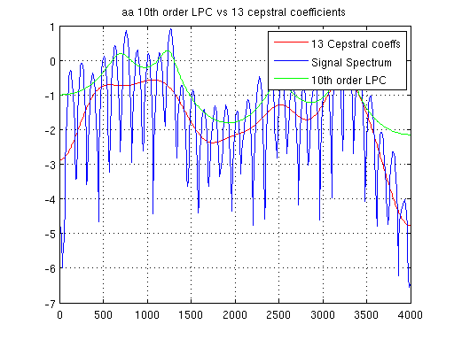 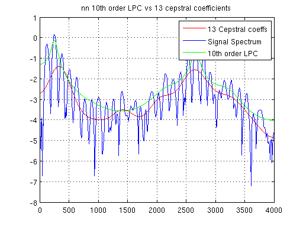 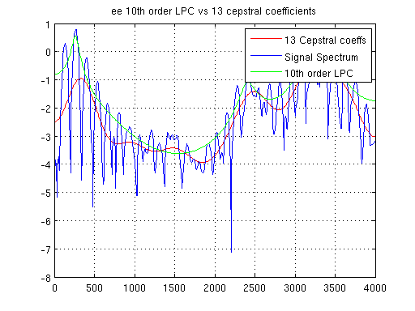 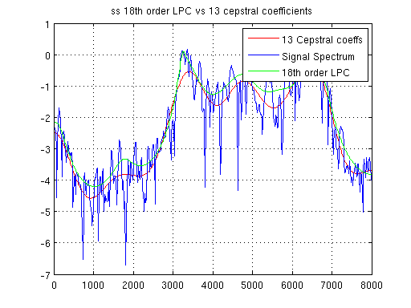 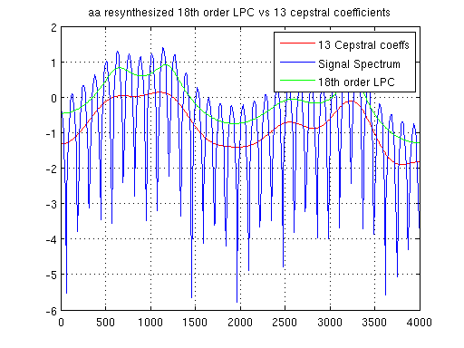
end